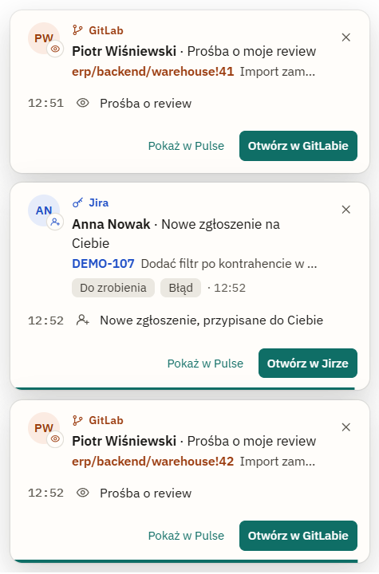
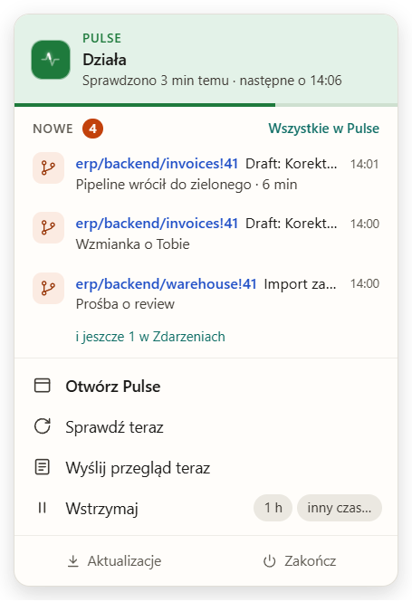

Wiesz, co słychać w Jirze i GitLabie, zanim ktoś zapyta
Pulse to mała aplikacja przy zegarze. Co kilka minut zagląda do Jiry i GitLaba i pisze na Google Chat albo w okienku na pulpicie, gdy coś dotyczy Ciebie: nowe zgłoszenie, komentarz, prośba o review, padnięty pipeline. Resztę przemilcza.
Nagranie prawdziwego Pulse 1.0.0: okno aplikacji, okienka powiadomień i dymek przy zegarze, klatka po klatce. Dane pochodzą z symulatorów Jiry i GitLaba.
Co potrafi
Wszystko poniżej jest w wersji 1.0.0. Zrzuty pochodzą z prawdziwego Pulse, na danych testowych.
GitLab: review, MR-y, pipeline'y
- Prośby o review, przypisania i wzmianki prosto z Twojej listy To-Do w GitLabie.
- Na Twoich MR-ach: komentarze i odpowiedzi, zatwierdzenia, „wymagane zmiany”, konflikt, scalenie przez kogoś innego.
- Pipeline padł, wrócił do zielonego albo trwa za długo. Po scaleniu Pulse śledzi ciąg aż do pipeline'u taga.
- Twoje własne kroki widać na karcie MR-a ze znaczkiem „Ty”, ale nigdy nie idą na kanały.

Jira: Twoje zgłoszenia
- Nowe zgłoszenia, zmiany statusu i priorytetu, komentarze i wzmianki o Tobie.
- Sam wybierasz, o czym mówić, osobno dla każdej roli: przypisany, zgłaszający, Comarch Responsible.
- Na karcie widać całą historię zgłoszenia z ostatnich 7 dni, a nowe zmiany są oznaczone.

Google Chat i okienka powiadomień
- Na Google Chat karty z kolorowymi oznaczeniami: typ, status, epik, pipeline.
- Okienko powiadomienia w rogu pulpitu, z podpisem źródła, dźwiękiem i przyciskiem, który otwiera zgłoszenie albo MR.
- W Wysyłce ustawiasz, co idzie na który kanał: osobno Jira, osobno GitLab.


Dymek przy zegarze
- Kliknij ikonę Pulse przy zegarze, a zobaczysz, czy wszystko działa i kiedy było ostatnie sprawdzenie.
- Do trzech najnowszych zdarzeń od Twojego ostatniego spojrzenia. Klik otwiera zgłoszenie w Jirze albo MR w GitLabie.
- Pod ręką: Sprawdź teraz, Wyślij przegląd teraz, Wstrzymaj na godzinę, Aktualizacje.
- Gdy coś nie działa, dymek mówi konkretnie, np. „GitLab: token odrzucony”, i podpowiada, co zrobić.

Codzienny przegląd
Raz dziennie lista otwartych spraw: w Jirze pogrupowana po epikach z terminami, w GitLabie MR-y czekające na Twoje review, Twoje do zrobienia i gotowe do scalenia.
Cisza, kiedy trzeba
Godziny ciszy, wstrzymanie na pół godziny, do 17:00 albo do jutra, także tylko jednego źródła. Po przerwie możesz pominąć to, co przyszło w tym czasie.
Bez niespodzianek
Jedna wiadomość, gdy Jira przestaje odpowiadać, i jedna, gdy wraca. Przypomnienie, zanim wygaśnie token. W GitLabie Pulse tylko czyta.
Pobierz Pulse
Wersja dla Windows. Kolejne wersje Pulse pobiera sam i instaluje jednym kliknięciem.
Projekt: link do instalatora dojdzie, gdy dział IT zatwierdzi instalator.
- Zainstaluj i otwórz. Pulse zamieszka przy zegarze.
- Podłącz Jirę i GitLaba. Adres i token, Pulse sam sprawdzi, czy działa.
- Dodaj kanał Google Chat. Wklej adres webhooka i wybierz, co ma tam trafiać.